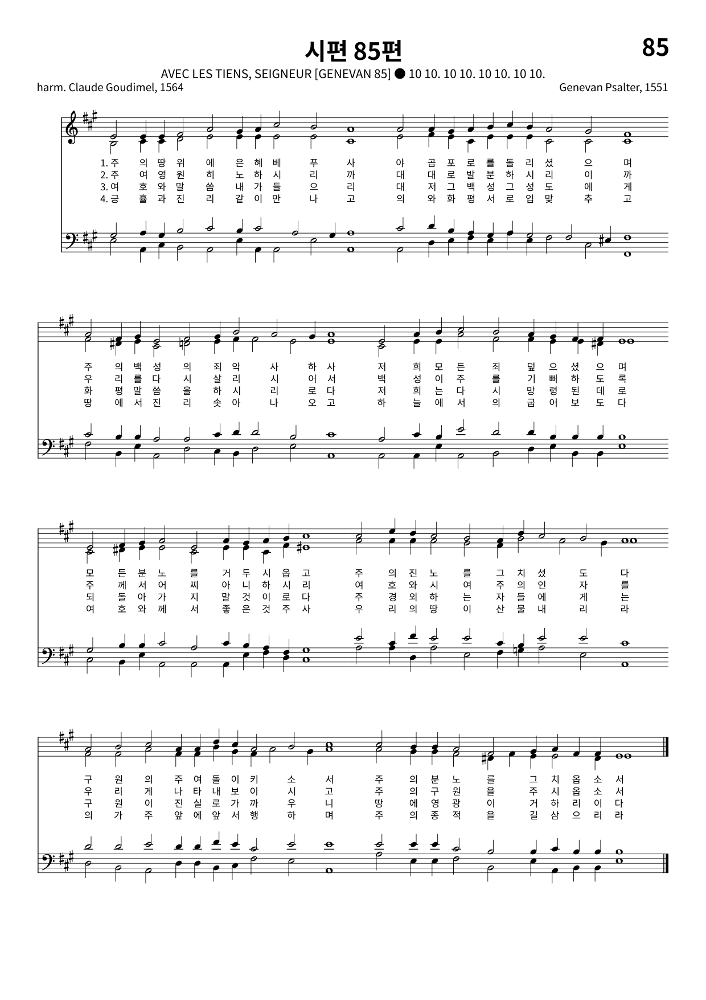

Psalm 85
AVEC LES TIENS, SEIGNEUR [GENEVAN 85] · 10 10. 10 10. 10 10. 10 10.
English title: Thou Hast Shown Favor to Thy Land, O LORD
Tune: Genevan Psalter, 1551 · Harmony: Claude Goudimel, 1564 · Lyrics: Korean adaptation of Psalm 85 from the Korean Revised Version (AI draft adaptation · not yet theologically reviewed) · 4 stanzas
Score PDF MusicXML (for printing) MusicXML (for accompaniment, with prelude and repeats) Read Psalm 85 (Korean Revised Version)
Score
← Psalm 84 ListAccompaniment (in preparation)Psalm 86 →
Lyrics (Korean)
Stanza 1 (Ps. 1-4)
주의 땅 위에 은혜 베푸사
야곱 포로를 돌리셨으며
주의 백성의 죄악 사하사
저희 모든 죄 덮으셨으며
모든 분노를 거두시옵고
주의 진노를 그치셨도다
구원의 주여 돌이키소서
주의 분노를 그치옵소서
주의 땅 위에 은혜 베푸사
야곱 포로를 돌리셨으며
주의 백성의 죄악 사하사
저희 모든 죄 덮으셨으며
모든 분노를 거두시옵고
주의 진노를 그치셨도다
구원의 주여 돌이키소서
주의 분노를 그치옵소서
Stanza 2 (Ps. 5-7)
주여 영원히 노하시리까
대대로 발분하시리이까
우리를 다시 살리시어서
백성이 주를 기뻐하도록
주께서 어찌 아니하시리
여호와시여 주의 인자를
우리게 나타내 보이시고
주의 구원을 주시옵소서
주여 영원히 노하시리까
대대로 발분하시리이까
우리를 다시 살리시어서
백성이 주를 기뻐하도록
주께서 어찌 아니하시리
여호와시여 주의 인자를
우리게 나타내 보이시고
주의 구원을 주시옵소서
Stanza 3 (Ps. 8-9)
여호와 말씀 내가 들으리
대저 그 백성 그 성도에게
화평 말씀을 하시리로다
저희는 다시 망령된 데로
되돌아가지 말 것이로다
주 경외하는 자들에게는
구원이 진실로 가까우니
땅에 영광이 거하리이다
여호와 말씀 내가 들으리
대저 그 백성 그 성도에게
화평 말씀을 하시리로다
저희는 다시 망령된 데로
되돌아가지 말 것이로다
주 경외하는 자들에게는
구원이 진실로 가까우니
땅에 영광이 거하리이다
Stanza 4 (Ps. 10-13)
긍휼과 진리 같이 만나고
의와 화평 서로 입맞추고
땅에서 진리 솟아나오고
하늘에서 의 굽어보도다
여호와께서 좋은 것 주사
우리의 땅이 산물 내리라
의가 주 앞에 앞서 행하며
주의 종적을 길 삼으리라
긍휼과 진리 같이 만나고
의와 화평 서로 입맞추고
땅에서 진리 솟아나오고
하늘에서 의 굽어보도다
여호와께서 좋은 것 주사
우리의 땅이 산물 내리라
의가 주 앞에 앞서 행하며
주의 종적을 길 삼으리라